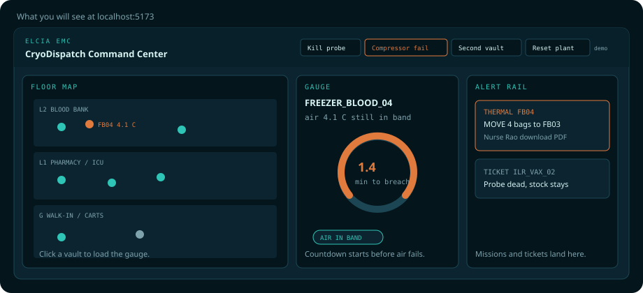

apps/sim · :8787
Plant
Simulates 24 vaults, predicts time-to-breach, picks a backup and a certified nurse, writes the custody record. Start this first.
A first-time walkthrough. For the 90-second pitch, see demo-script.md. The Markdown twin is how-to-run.md. This page is offline — no build, no CDN.

Simulates 24 vaults, predicts time-to-breach, picks a backup and a certified nurse, writes the custody record. Start this first.
Hospital wall display: floor map, gauge, alert rail, demo buttons, custody PDF.
Nurse phone: inbox → accept MOVE → scan unit, then source, then destination. Optional on a laptop.
/api and /ingest
/api/state on the LAN IP
The browser never talks to the plant’s port directly in local dev.
The phone must use the laptop’s LAN IP; 127.0.0.1 is the phone itself.
This LAN path is the summit default — leave
VITE_SUPABASE_* and EXPO_PUBLIC_SUPABASE_* unset.
corepack enable then corepack prepare pnpm@10.15.0 --activate if you do not have it)From the repo root:
cd apps/sim python3 -m venv .venv .venv/bin/pip install -e ".[dev]" cd ../.. pnpm install

| Step | Command | You know it worked when |
|---|---|---|
| 1 · Plant | cd apps/sim && .venv/bin/python -m sim |
Rich table ticking; /api/state returns JSON |
| 2 · Command centre | pnpm dev:web from the repo root |
Browser at localhost:5173 shows a 3-floor map, not “Connecting to plant…” |
| 3 · Staff (optional) | EXPO_PUBLIC_PLANT_URL=http://<LAN-IP>:8787 pnpm dev:staff |
Inbox prints that URL; Expo Go is on the same Wi-Fi |
On this Mac the LAN IP is:
ipconfig getifaddr en0
Three terminals. Leave the plant running while you start the others.

Header buttons drive the demo: Kill probe, Compressor fail, Second vault, Reset plant. Click a vault on the map to load the gauge. Missions and tickets land on the right rail. Download PDF on a completed MOVE writes the Chain of Cold Custody certificate in the browser.

The inbox prints the plant URL it is using — a wrong IP is visible, not silent. After ACCEPT MOVE the plan is locked. Scan order is unit → source vault → destination vault. A wrong vault is a hard reject.
The command-centre header is enough for a laptop-only walkthrough. From another terminal you can hit the same anomalies:
cd apps/sim .venv/bin/python -m sim --anomaly ILR_VAX_02 lwt # probe death → ticket only .venv/bin/python -m sim --anomaly FREEZER_BLOOD_04 compressor # predicted breach → MOVE .venv/bin/python -m sim --anomaly FREEZER_BLOOD_05 compressor # cascade .venv/bin/python -m sim --anomaly ALL reset # replay
Without a camera, type these into the staff scan screen:
UNIT:BAG-ONEG-01 VAULT:FREEZER_BLOOD_04 VAULT:FREEZER_BLOOD_03
Printable cards: qr-stickers.html. Full 90-second beat: demo-script.md.
| Symptom | Fix |
|---|---|
| Web stuck on “Connecting to plant…” | Start the plant first (apps/sim → .venv/bin/python -m sim). If VITE_SUPABASE_* is set, either start the plant so it can publish or unset those vars for LAN. |
| Phone inbox empty / cannot fetch | Inbox URL is the tell. 127.0.0.1 is dead on a physical phone. Set EXPO_PUBLIC_PLANT_URL to http://<LAN-IP>:8787 and stay on the same Wi-Fi. |
| Camera denied | Type the three codes above. |
npm warnings or broken Expo resolve |
Use pnpm, not npm. |
| Want a clean replay | Reset plant in the header, or --anomaly ALL reset. |
The plant can publish to project cefhoczywrycsbniywus (ap-south-1)
when SUPABASE_URL and SUPABASE_SERVICE_ROLE_KEY are set.
Clients use Realtime only if you also set the anon keys.
Never put the service role in VITE_* or EXPO_PUBLIC_*.
ESP32 still posts to the plant /ingest (the Edge Function returns 410).
If clients are on Realtime, pause after Compressor fail before handing the phone.
Supabase, MQTT, or the ESP32 firmware. Those are optional extras. The live demo path is the Python plant plus the two clients on one laptop (and an optional phone).